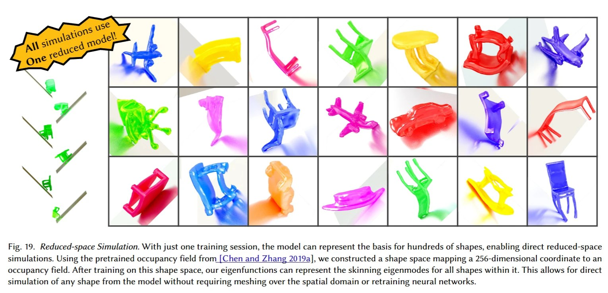

Paper reading: Shape Space Spectra (SIGGRAPH 2025)
Eigenanalysis over a whole family of shapes at once, with a neural field that makes it differentiable with respect to shape.

Shape Space Spectra (ACM TOG / SIGGRAPH 2025) —
paper (arXiv) ·
paper (PDF) ·
ACM DL ·
SIGGRAPH blog post
Motivation
Eigenanalysis is tied to a single discretized shape, so every change in geometry requires remeshing and re-solving. That cost blocks fast shape optimization.
Key insight
When the shape changes, the apparent jumps between modes may not reflect discontinuities in the eigenfunctions themselves. They come from eigenvalue crossings, where a higher eigenvalue mode becomes a lower one, or the other way round, as the shape varies.
Implementation
Treat the shape code $g$ as an extra input to a neural field, $\phi(g, x)$, and minimize the unit-norm Dirichlet (or elastic) energy over the entire shape space. No solver labels are needed:
- Mesh-free cubature through indicator-based rejection sampling.
- A Gram–Schmidt projection layer that enforces orthonormality.
- Joint training of several eigenfunctions, with per-shape eigenvalue sorting and causally filtered (detached) gradients to track mode crossings.
Applications
The result is a differentiable eigenanalysis module that enables shape optimization. The trained model can also warm-start eigenanalysis for new shapes.
Comments
Sign in with GitHub to comment. Threads live in this site's GitHub Discussions.